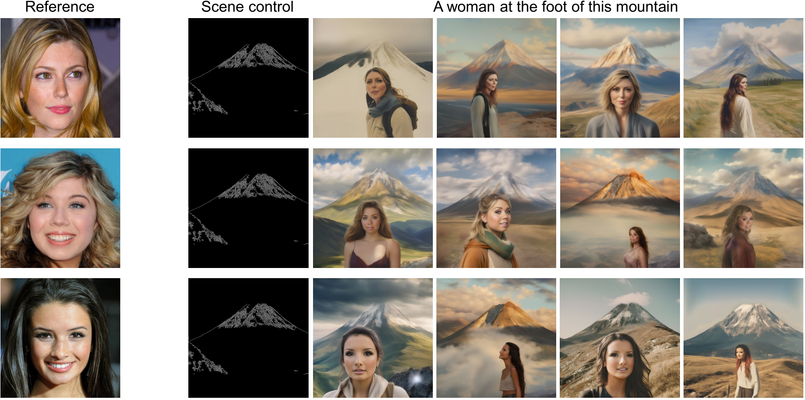

Abstract
Recently remarkable progress has been made in synthesizing realistic human photos using text-to-image diffusion models. However, current approaches face degraded scenes, insufficient control, and suboptimal perceptual identity. We introduce CustomEnhancer, a novel framework to augment existing identity customization models. CustomEnhancer is a zero-shot enhancement pipeline that leverages face swapping techniques, pretrained diffusion model, to obtain additional representations in a zeroshot manner for encoding into personalized models. Through our proposed triple-flow fused PerGeneration approach, which identifies and combines two compatible counter-directional latent spaces to manipulate a pivotal space of personalized model, we unify the generation and reconstruction processes, realizing generation from three flows. Our pipeline also enables comprehensive training-free control over the generation process of personalized models, offering precise controlled personalization for them and eliminating the need for controller retraining for per-model. Besides, to address the high time complexity of null-text inversion (NTI), we introduce ResInversion, a novel inversion method that performs noise rectification via a pre-diffusion mechanism, reducing the inversion time by 129×. Experiments demonstrate that CustomEnhancer reach SOTA results at scene diversity, identity fidelity, training-free controls, while also showing the efficiency of our ResInversion over NTI. The code will be made publicly available upon paper acceptance.
Method
Overview of the proposed: (a) CustomEnhancer pipeline and (b) BiMD approach within personalized model.
Experimental Results
Figure. Qualitative comparison on identity-preserved recontextualization samples.
Table. Quantitative results on photomaker and instantid and our method when they plug in.
Figure. Comparison under scene-invoking prompts.
Table. Generation latency by different inversion methods.
Training-free control
Training-free control for (a) human controlled personalization.
Training-free control for (b) environmental-elements controlled personalization.
Ablation
Ablation on components. Results after final output, face swapping, SDXL components, and after ablating the FWD and BKWD flow in BiMD.
Ablation through step. Smaller steps tend to generate by PhotoMaker whereas larger steps by our pipeline.
Applications